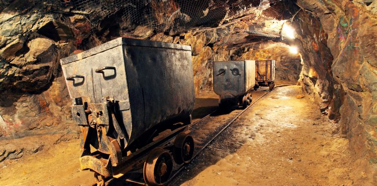

.png)
Tarih, arkeoloji, jeoloji, antropoloji başta olmak üzere çeşitli bilim dallarında yapılan çalışmalar, insanlığın başlangıcından ve özellikle bir arada yaşama geçişten itibaren madenlerin insan yaşamında yer aldığını göstermektedir. Madenler temelde insana doğa karşısındaki mücadelesinde çok önemli bir güç kazandırmıştır. Öyle ki; tarihte insanlığın gelişim evrelerinde madenlerin bulunması ve işlenmeye başlanması büyük rol oynamıştır: Yerleşik yaşama geçiş ve tarım toplumunun ortaya çıkması, buna bağlı olarak ortaya çıkan işbölümü, yönetim vs. alanlarındaki gelişmeler, zaman içinde gerçekleşen sanayileşme ve yaşamın ekonomik, politik, sosyolojik vs. hemen her alanında yarattığı etkiler... Bu noktadan hareketle, madenciliğin dünyanın en eski mesleklerinden biri olduğu söylenmektedir.
Madencilik sektörü insanlık tarihi açısından en eski sektörlerden biri olmasına rağmen, ülkemizde bu sektör hakkında kamuoyunun bilgisi çoğunlukla kitle iletişim araçlarından edindikleriyle sınırlıdır. Bu durum, kitle iletişim araçlarında birtakım eksiklikler olduğunu akla getirmektedir. Örneğin, televizyon ve gazetelerde madencilerle ilgili konular çoğu kez, madenlerde yaşanan patlamalar ve ortaya çıkan can kayıplarıyla ilgili haberlerin ötesine geçmemektedir. Dolayısıyla kamuoyu madencilik sektörünü genellikle bu tür olaylarla hatırlamakta, sektörün içinde bulunduğu diğer rasyonel durumlardan haberdar olmamaktadır. Bu gözlemden yola çıkarak bu çalışma kapsamında madencilik sektörünün içinde olmayan bireylerin, sektörün Türkiye'deki durumu hakkında çeşitli kaynaklardan edinebileceği belli başlı, güncel bilgiler kısaca derlenmeye çalışılmıştır.
Türkiye'de Madenciliğin Tarihçesi
Türkiye'de madenciliğin, tarihi çağlardaki, Osmanlılar dönemindeki ve Cumhuriyet dönemindeki madencilik şeklinde evreler halinde incelendiği görülmektedir. Madencilik insanoğlunun başlangıcından beri vardır; Anadolu'da yapılan kazılar ve çeşitli çalışmalar da bunu destekler niteliktedir. Örneğin, tarihi çağlarda ilk altın paranın Anadolu'da Lidyalılar tarafından basıldığı bilinmektedir. Bunun çok daha öncesinde, henüz M.Ö.7000'lerde, Anadolu'da madenler ergitilip işlenmiştir. Milattan önceki yıllarda Ergani bakır yatağını Fenikeliler, Asurlular ve Cenevizliler, Murgul bakır yatağını yine Cenevizliler çalıştırmışlardır. İlk çağlarda Marmara Adası'ndan mermer çıkarılarak heykeller yapılmıştır. Türklerin Anadolu'ya yerleşmeleriyle madencilikte Arap - İslam etkisi görülmeye başlanmış, 13. yüzyılda Gümüşhane'de gümüş madenleri işletilmiş, Selçuk darphanelerinde para basılmıştır.
Madencilik Osmanlı İmparatorluğu'nun ilk dönemlerinde devlet katkısı görmüş, 1815 yılında Bandırma yakınlarında bor, 1829 yılında Zonguldak'ta taşkömürü, 1848 yılında Bursa-Harmancık'ta krom bulunmuştur. Devletin maden sektörünü düzenlemeye yönelik çeşitli çalışmaları olmuştur. Örneğin, 1861'de devletin maden sahiplerinden %25 gibi bir hisse alınmasını öngören ilk Maden Nizamnamesi etkili denetim olmadığı için başarı sağlayamamıştır. Daha sonraları, 1869, 1886 ve 1906 yıllarında üç ayrı maden yasası çıkarılmış, 1906 yasası ile işletme izni süresi, 99 yıl olarak belirlenmiş ve devlet payı madenin cinsine göre %1 ile %20 arasında değişmiştir.
Cumhuriyet'in ilanından sonra madencilik sektöründe Osmanlı döneminden farklı bir politika izlenmeye başlanmıştır. Osmanlı döneminde daha çok yabancı egemenliği altında olan sektörün durumu bu anlamda iyileştirilmeye çalışılmıştır. Ayrıcalıklı yabancı sermayeye karşı çıkılmış, ancak anonim ortaklıklar kurularak sektörde yabancı sermayenin yoğun girişimlerde bulunması da sağlanmıştır. İzmir İktisat Kongresinde (1923), bu doğrultuda alınan kararlar ışığında özel kesimin finansmanını karşılamak üzere İş Bankası ve Türkiye Sanayi ve Maadin Bankası kurulmuştur. Ancak, ülkenin savaştan yeni çıkmış olması, özel kesimin sermaye birikiminin yeterli olmayışı ve 1929 dünya ekonomik krizi nedeniyle sektörde kamunun etkinliğinin arttırılmasına öncelik verilmiştir.
Devletin madencilik sektöründe öncülük etmesi amacıyla, madenlerimizin daha rasyonel bir şekilde aranması, bulunanların rezerv ve kalitelerinin tespiti, ekonomiye kazandırılması için 1935 yılında MTA Enstitüsü, bulunan madenlerin işletilmesini sağlamak amacıyla aynı yıl Eti bank, 1940 yılında da Ereğli Kömür İşletmesi Müessesesi (EKİ) kurulmuştur. 1954 yılında MTA'dan alınan çalışan, ekipman ve dokümanlarla Türkiye Petrolleri Anonim Ortaklığı (TPAO) kurularak devlet adına petrol arama, üretim ve arıtma görevlerine başlamıştır. Aynı yıl madenleri özel girişimin arama ve işletmesine açan ve özel-kamu girişimine eşit davranılmasını ilke edinen 6309 sayılı Maden Kanunu yürürlüğe konmuştur.
1957 yılında, Türkiye Kömür İşletmeleri Kurumu oluşturulmuş, taşkömürü ve linyit üretim görevi bu kuruluşa verilmiştir. 1961 Anayasası'nın 130. maddesi ile doğal kaynaklarımız, anayasa güvencesi altına alınmış, 1963 yılında, enerji ve madencilik ile ilgili politikaları oluşturmak, uygulamaları denetlemek ve yönlendirmek amacıyla Enerji ve Tabii Kaynaklar Bakanlığı kurulmuştur.
1978 yılında çıkarılan 2172 sayılı kanunla, çok sayıda kömür ve demir işletmesi devletleştirilmiş, ancak üretimdeki düşüşler nedeniyle devletleştirilen sahaların birçoğu 1983 yılında çıkarılan 2804 sayılı kanunla sahiplerine iade edilmiştir. Yine 1983 yılında Türkiye Taşkömürü Kurumu (TTK) kurulmuş ve taşkömürü üretimi TKİ'den alınarak bu kuruluşa devredilmiştir. 1985 yılında yayınlanan ve madenlerimizin daha rasyonel bir biçimde aranmasını ve işletilmesini amaçlayan 3213 sayılı Maden Kanunu, günümüzde de yürürlüktedir.
Türkiye'de Madenciliğin Bugünü
Maden Potansiyeli
Temel sanayi girdilerine ham madde sağlayan bir sektör olan madencilik, ülkemiz temel sektörleri arasında önemli bir yer teşkil etmektedir. Ülkemiz hem çeşitlilik hem de önemli maden yataklarına sahip olması bakımından zengin bir ülke olup bazı maden kaynakları açısından kendine yetebilecek nadir ülkeler arasındadır. Günümüzde dünyada ticareti yapılan 90 çeşit madenden sadece 13'ünün Türkiye'de varlığı saptanmamıştır. Ülkemizde 60 civarında farklı madenin üretimi yapılmaktadır. Ancak, var olan maden yataklarının birçoğunda, en azından bugün için, bilinen rezerv miktarları ile cevher kaliteleri ekonomik işletmecilik için yeterli ya da uygun değildir. Özellikle, enerji hammaddeleri açısından Türkiye'nin zengin olduğunu söyleyebilmek zordur.
Maden potansiyeli açısından değerlendirildiğinde, Türkiye'de bulunan maden kaynaklarını zengin mineral kaynaklar, önemli mineral kaynaklar ve yetersiz olan mineral kaynaklar şeklinde aşağıdaki tabloda olduğu gibi vermek mümkündür.
Önceden belirtildiği üzere Türkiye enerji hammaddeleri açısından zengin bir ülke olmasa da Tablo 1'de verilen kaynaklar içerisinden özellikle bor, trona, mermer, manyezit, pomza, perlit ve stronsiyum mineralleri açısından dünyanın sayılı zengin ülkelerinden biridir. Bu değerlendirme için ülke rezervleri dünya rezervleri ile kıyaslanmıştır. Tablo 2'de Türkiye'nin metalik mineraller, katı fosil yakıtlar ve endüstriyel mineraller açısından dünya rezervi içerisindeki payı gösterilmiştir.
Türkiye'nin maden potansiyeli genel olarak; "çeşitlilik açısından zengin, ancak birkaç örnek dışında dünya ölçeğinde rezervleri sınırlı" olarak tanımlanmaktadır. Tablolardaki değerler bu gerçeği kanıtlar niteliktedir.
Dünya maden sektörünün en güçlü aktörlerinin ABD, Çin, Güney Afrika, Kanada, Avustralya ve Rusya olduğu görülmektedir. Bu güçte, dünya maden rezervlerinde önemli paya sahip olmalarının yanı sıra dünya maden üretiminde de diğer ülkelere göre önde oluşları etkilidir.
Son yıllarda küreselleşmenin etkisiyle sanayideki gelişmeler maden kaynaklarıyla ilgili yeni durumları gündeme getirmiştir. Önceki yıllarda kaynaklar rahatlıkla ve yeterli şekilde temin edilebilirken sonraki dönemlerde bu şekilde olmamaya başlamıştır. Kaynaklar, millileştirme ve değişen pazar politikaları, rekabet, artan talep vs. sebeplerle yetersizleşmeye başlamıştır. Bu koşullarda farklı maden kaynaklarına sahip olmak ülkeler için daha stratejik bir avantaj haline gelmiştir. Öyle ki, gelişmiş ülkelerin dış politikalarını bile giderek yeraltı kaynaklarına göre şekillendirdiği gözlenmektedir. Dolayısıyla, özellikle gelişmiş ülkelerin, maden kaynakları açısından zengin olan diğer ülkelerle olan ticari ilişkilerini bu yönde güçlendirdikleri görülmektedir. Belçika, Hollanda, Almanya, Fransa, İngiltere, Yunanistan gibi Avrupa ülkelerinin yanı sıra ABD, Kanada, Rusya, Çin ve daha birçok ülke sahip olduğu önemli maden kaynaklarından dolayı Türkiye'ye yönelik yatırımlarına ivme kazandırmışlardır. Şu anda Türkiye'de maden arama ruhsatı olan yabancı ortaklı şirketlerin büyük bölümünde yerli sermayenin yok denecek kadar az olduğu bilinmektedir.
Maden İhracatı ve
Madenlerin Ekonomiye Katkısı
Türkiye'deki yabancı ortaklı maden arama şirketlerinde büyük sermaye sahibi olan gelişmiş ülkeler aynı zamanda Türkiye maden ihracatında da önemli bir yere sahiptirler. 2010 verilerine göre madencilik ürünleri ihracatının gerçekleştirildiği önemli ülkeler arasında, Çin Halk Cumhuriyeti 1.5 milyar dolarla ilk sırada yer alırken Çin'i sırasıyla, 271 milyon dolarla ABD, 110 milyon dolarla Belçika ve 105.9 milyon dolarla Bulgaristan ve 99.4 milyon dolarla İtalya takip etmektedir.
Maden ihracatının Türkiye'nin toplam ihracatındaki payına bakıldığında görülmektedir ki 2000'li yılların başında %2'leri geçmeyen oran, özellikle 2003'te bir sıçrama göstererek %2.7'lere ulaşmıştır. Son yılların ihracat oranlarında bakıldığında ise sektörün ihracat payının %2.5 civarında seyrettiği görülmektedir. Türkiye maden açısından zengin bir ülke olarak nitelendirildiği düşünüldüğünde sektörün ihracattaki payının düşük olduğu görülmektedir.
Maden sektörünün gayri safi yurtiçi hasıladaki payına bakıldığında, sektör payının %1'leri aşamadığı, buna rağmen her yıl bir önceki yıla göre bu sektörün gayri safi yurtiçi hasıladaki payında artış olduğu görülmektedir. Bu artışın 2009 yılında çok düşük olması o dönem yaşanan global ekonomik krizin sektör üstündeki olumsuz etkisinden kaynaklanmaktadır. Madencilik sektörünün gayri safi yurt içi hasıladaki payının düşük olmasının en önemli nedenleri ülkemizin sanayileşmede beklenen konuma gelememesi, mamul madde üretiminin yeterince yapılamaması ve madenlerimizin hammadde olarak ihraç edilmesi olarak gösterilmektedir. Madenlerimizin ham olarak ihraç edilmesi; yer altı kaynaklarımızı ekonomiye katmak yerine tam tersine ekonomi dışına itmek anlamına gelmektedir.
Madencilik Sektörünün Sorunları
Daha önce belirtildiği gibi madencilik sektörü hakkında kamuoyunun çoğunlukla sorun olarak gördüğü nokta, sektörde yaşanan iş kazalarıdır. Tabi ki sektörün sorunları bu iş kazalarıyla sınırlı değildir, bu iş kazaları aslında asıl sorunların görünen tarafıdır. Madencilik sektörünün bugününü -maden potansiyeli, ihracatı ve ekonomiye katkısı- ele alırken, sektörün temel sorunlarına değinmek yerinde olacaktır. Sektörün sorunları şu şekilde özetlenebilir:
Ülke madencilik sektörünün en önemli darboğazlarından biri, gerek kamu gerekse özel kuruluşlardaki yönetsel yapıların verimsizliğidir.
Madencilik konusunda uzman mühendislere gereken önem verilmemektedir.
Maden mühendislerinin eğitimi istenilen düzeyde değildir.
Yürürlükte bulunan 4857 Sayılı İş Kanunu; 50 den az işçi çalıştıran (sektör ağırlıklı olarak bu durumdadır) işyerlerinde iş kazalarının önlenmesinde yetersiz kalmaktadır.
Çalışma ve Sosyal Güvenlik Bakanlığı ve Enerji ve Tabii Kaynaklar Bakanlığı, denetlenecek iş yeri sayısı ve mevcut denetim elemanı sayısı dikkate alındığında gerekli denetimi yeterince yapmamaktadır.
Maden arama uzun yıllar ihmal edilmiştir.
3213 Sayılı Maden Kanunu'nda değişiklik yapılarak madenlerin denetimi İl Özel İdareleri'ne devredilmiştir. Söz konusu kurumda yeterli ve deneyimli maden mühendisi ve diğer teknik eleman bulunmadığı için Maden Kanunu'nun gerekleri yerine getirilemediği gibi bu durum iş kazalarının artmasına neden olabilecektir.
Teknik nezaretçi uygulamasında aynı zamanda iş güvenliğinden de sorumlu olan mühendis ücretini, denetlemek durumda olduğu işyeri sahibinden almakta olup, bu durum mühendisin işletme ile ilgili kararlarında özgür davranmasını engellemektedir.
Madencilik sektöründeki teşvikler yetersizdir.
Sektörde pazarlama araştırması olgusu gelişmemiştir.
Yeterince eleman alınmaması ve yatırım yapılmaması, Kamu Kurum ve Kuruluşları'nı işlevsiz hale getirmektedir.
Sanayimizin ana girdisi elektrik enerjisinin önemli hammaddelerinden biri olan yerli kömür kaynaklarının yeterince kullanılmaması, bunun yerine ithal kömür ve ithal doğal gaza dayalı politikalar, enerji arz güvenliğinden de öte ülke güvenliğini tehlikeye sokmaktadır.
Madencilik sektörüne yeterince önem verilmemesi sebebiyle işsizlik ve göç sorunu artmıştır.
Arama ve işletme aşamasında yapılan madencilik projeleri uygulanmamaktadır.
Madencilik çalışmaları sırasında ortaya çıkan olumsuz çevresel etkiler konusunda sektörde bulunan tüm kesimler sorumluluklarını üstlenerek gerekliliklerini yeterince yerine getirmemektedir.
Sektörü ilgilendiren kanunlar hükümet ve sağlanmadan çıkarılmaktadır.
Stratejik bir maden olan bor yeterince değerlendirilmemektedir.
Madenler hammadde olarak ihraç edilmekte, hem dış ülkelere ucuz kaynak yaratılmakta hem de yerli sanayiye düşük maliyetli ve kaliteli girdi sağlanamamaktadır.
Madenlerin Pazarlanması
Madencilik sektörünün sorunlarına değindikten sonra, sektör için büyük önem taşıyan madenlerin pazarlanması konusunun incelenmesi gerekmektedir, çünkü sektörün bu konuda sıkıntı yaşadığı görülmektedir. Bu bölümde, maden ihracı, uygulanan politikalar, sektör içi birliktelik, kullanılan teknoloji, sektördeki ürün çeşitliliği konuları ve bunların sorunları üzerinde durulmuştur.
Daha önce belirtildiği gibi madenlerimizin çoğu hammadde olarak ihraç edilmektedir. Buna rağmen, madencilik sektörünün ihracattaki payının maden açısından zengin bir ülke olarak nitelendirilen Türkiye için düşük olduğu bilinmektedir. Bu durumun sebeplerinden biri madenlerin pazarlanması konusuyla ilgilidir. Madencilik sektörünün, pazarlama açısından incelendiğinde, çeşitli sorunlarının olduğu gözlemlenmektedir.
Sektörün, pazarlama açısından en önemli problemlerinden biri, iç ve dış pazarlarda ortak bir pazarlama statejisinin olmaması ve bu durumun sektörün rekabet gücünü olumsuz yönde etkilemesidir. Gerek var olan gerekse gelişen pazarlara uygun stratejilerin geliştirilmesi için, pazarlama araştırmaları konusunda zayıf olan sektörün kendini bu yönde geliştirmesi gerektiği vurgulanmaktadır.
Maden ihracatında firmaların uyguladıkları fiyatlandırma politikalarında dengesizlik görülmektedir. Özellikle dış pazara yönelik satışta fiyat birliğinin olmaması ve piyasa araştırması yapılmadan teklif verilip, yüksek oranda iskontolara gidilmesi, piyasadaki fiyat dengelerini bozmaktadır Bu durum, hammadde olarak ihraç edilen madenlerimizin değerlerinin çok altında bir fiyatla dış pazarlara satılmasına ve yerli firmaların kar oranlarının düşmesine neden olmaktadır. Dolayısıyla firmaların pazarlama ve fiyat stratejisi konusunda uyması gereken politikalara ihtiyaç duydukları belirtilmektedir. Madenleri gerçek değerleri ile pazarlamak ve piyasada bir denge oluşturmak için firmaların bilgilendirilmesi ve uyarılması konusu üzerinde görüş birliği vardır.
Bununla birlikte, bazı madenlerin pazarlama aşamasında bir isim birliğine sahip olmadıkları görülmektedir. Ülkemizde çok çeşitli renk ve desende doğaltaş işlenmekte ve bazen aynı ocaktan çıkan taşlar bile farklı isimler almaktadır. Bu durum da müşterinin bazı madenlerin çeşitlerini tanımasını ve bu madenlerin yurtdışında marka olmasını zorlaştırmaktadır. Bunun engellenmesi için madenlerde isim birliğine gidilmesinin gerekliliği savunulmaktadır.
Ülkemizde, doğal taş ürünlerinin iç ve dış pazar paylarının arttırılması için üretimde modern teknolojilerin kullanımı, özellikle bu taşların işlenmesinde teknolojinin daha da geliştirilmesi öngörülmektedir. Ancak; bu gelişmelerle ilgili (malzeme üretim teknolojisi, tasarım vb.) konularda firmaların pazarlama departmanında görev alan personelin eğitilmesi gerekmektedir.
Yurt dışındaki müşterilerin genellikle kendi ülkelerinde şubesi bulunan firmaları tercih ettikleri görülmektedir. Bu açıdan değerlendirildiğinde, Türk firmalarının pazarlarını genişletmek, ülkelerin pazar yapılarını anlamak ve buna uygun tanıtma stratejileri belirlemek, ülke tanıtımı ve markalaşmak için farklı ülkelerde şube açmalarının yararlı olacağı düşünülmektedir.
Bunlara ek olarak, sektördeki firmaların, işlenmiş ürün kapasiteleri ve ürün çeşitlilikleri ile ürün kalitelerini arttırmaya yönelik yatırımlar yapmaları ve etkin dağıtım ağları kurmaları gerektiği vurgulanmaktadır.
Sonuç
Türkiye'de madencilik sektörüne genel olarak bakıldığında ülkenin sahip olduğu maden kaynaklarından yararlanma noktasında öngörülen hedeflerin yakalanamadığı görülmektedir. Bu konuyla ilgili olarak çoğu kez dile getirilen şey atılımın yapılabilmesi, madencilik yatırımlarının ve ihracatının son derece cazip kılınabilmesi gerektiğidir. Türkiye'de madenciliğin ekonomiye katkısının arttırılması ve dolayısıyla istihdam sağlama, sosyal yarar gibi olumlu katkılarının hayata geçirilebilmesi için öncelikle madenciliğin önemi üzerinde durulmalı ve bu bilinçle gerekli düzenleme ve uygulamalar gündeme getirilmelidir. Kamuoyunun da bu noktada gelişmelerden haberdar edilmesi önemlidir.
Madencilik sektörü sanayileşmenin temel girdilerini üretmektedir. İnsanlık tarihi içerisinde, üretimin ve ihracatın zamanla tarımdan sanayiye kayması, sanayi için kaliteli hammaddelerin ekonomik olarak elde edilmesini gerekli kılmıştır. Gelişmiş sanayi ülkelerinin hemen hepsinde de bu gelişmeyi sağlayan öncü faktör madencilik olmuştur. Türkiye'nin kalkınma ve ekonomik gelişmesi için madenciliğin sağlayacağı bu büyük katma değeri kullanabilmesi şarttır. Azımsanmayacak sayıda madene sahip ve maden kaynakları yönünden zengin olarak nitelendirilen bir ülke olarak Türkiye'nin bu avantajını kullanabilmesi lazımdır. Ayrıca, Türkiye'nin madencilikte dünyada rekabet gücünün yüksek olduğu önemli madenleri vardır. Bunların başında bor gelmektedir. Toryum, linyit, mermer, manyezit, trona, feldspat ve sodyum sülfat diğer önemli madenleridir.
Madencilik sektöründeki sorunların belirlenip bunlara yönelik çözümlerin hızlı şekilde uygulamaya konulması önemli bir adım olacaktır. Genellikle üzerinde hem fikir olunan temel geliştirme uygulamaları; ana girdi maliyetleri ve nakliye ücretlerinin düşürülmesi, yeni teknolojilerin kullanımı ve AR-GE çalışmalarına önem verilmesidir. Bu sayede, madenciliğin iç ve dış pazarlarda rekabet gücünün arttırılması mümkün olacaktır. Ayrıca, verimlilik artışının yakalanması açısından teknik eleman istihdamının arttırılması, ileri teknolojilere uyum sağlayacak iyi eğitilmiş işgücünün sağlanması ve üniversite-sektör işbirliğinin arttırılması önerilmektedir. Bunlara ek olarak, pazarların yakından izlenerek değişimlere uygun stratejilerin belirlenmesi için sektörde pazar araştırmasının yapılması ve çeşitli pazarlama stratejilerinin oluşturulması önemli görülmektedir.